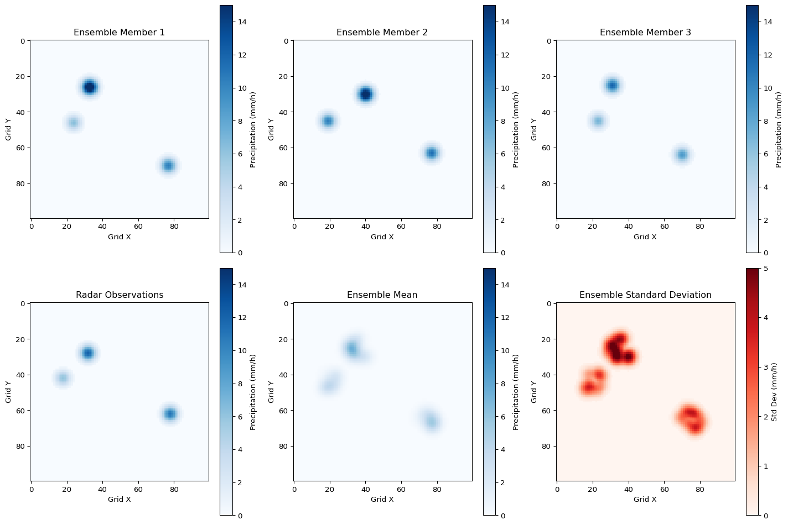
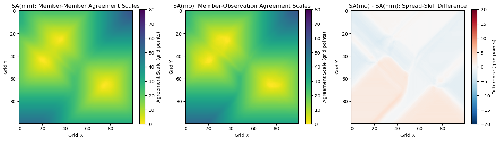
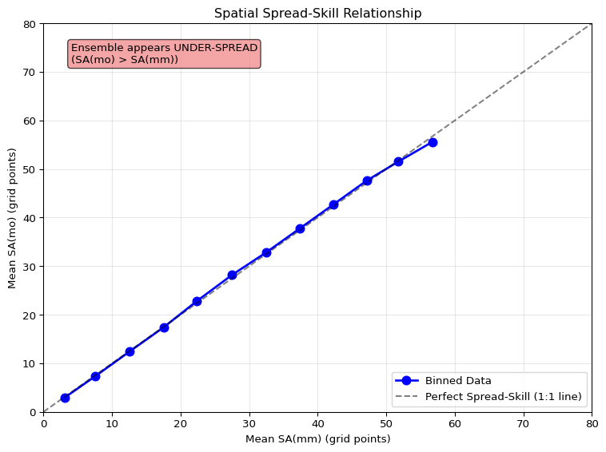

import numpy as np
import matplotlib.pyplot as plt
from scipy.ndimage import maximum_filter, minimum_filter
import xarray as xr
def calculate_similarity_criterion(f1, f2, alpha=0.5):
"""Calculate similarity criterion D between two fields"""
if f1 > 0 or f2 > 0:
return (f1 - f2)**2 / (f1**2 + f2**2)
else:
return 1.0
def agreement_criterion(scale, alpha=0.5, s_lim=80):
"""Calculate agreement criterion threshold"""
return alpha + (1 - alpha) * scale / s_lim
def calculate_agreement_scale(field1, field2, i, j, alpha=0.5, s_lim=80):
"""Calculate agreement scale at grid point (i,j) between two fields"""
ny, nx = field1.shape
for scale in range(s_lim + 1):
# Define neighborhood bounds
i_min = max(0, i - scale)
i_max = min(ny, i + scale + 1)
j_min = max(0, j - scale)
j_max = min(nx, j + scale + 1)
# Calculate neighborhood averages
f1_avg = np.mean(field1[i_min:i_max, j_min:j_max])
f2_avg = np.mean(field2[i_min:i_max, j_min:j_max])
# Calculate similarity
d_ij = calculate_similarity_criterion(f1_avg, f2_avg, alpha)
d_crit = agreement_criterion(scale, alpha, s_lim)
# Check if agreement criterion is met
if d_ij <= d_crit:
return scale
return s_limAgreement Scales for Convective-Scale Ensemble Verification
Spatial Predictability Assessment - Dey et al. (2016)
Motivation
Modern convective-scale ensembles provide detailed precipitation forecasts, but traditional verification suffers from the “double penalty” problem when features are slightly displaced.
When it comes to convective precipitation, what we want to know is:
Where will precipitation occur with confidence?
What are the spatial uncertainties in ensemble forecasts?
How do we assess location-dependent predictability?
Agreement Scales by Dey et al. (2016) evaluates the spatial predictability of convective-scale ensembles by calculating neighborhood-based agreement between forecasts at each grid point.
The Agreement Scales Method
Agreement Scales compute location-dependent measures of spatial agreement:
| Component | What it measures |
|---|---|
| SA(mm)_ij | Agreement scales between ensemble member pairs |
| SA(mo)_ij | Agreement scales between members and observations |
| Spatial Spread | How ensemble members differ spatially |
| Spatial Skill | How well ensemble captures observed spatial patterns |
Spatial Spread-Skill Relationship: \[\text{Compare } SA^{(mm)}_{ij} \text{ with } SA^{(mo)}_{ij}\]
Agreement Scale Calculation
The similarity criterion compares forecast fields f₁ and f₂:
\[D^S_{ij} = \begin{cases} \frac{(f^S_{1ij} - f^S_{2ij})^2}{(f^S_{1ij})^2 + (f^S_{2ij})^2}, & \text{if } f^S_{1ij} > 0 \text{ or } f^S_{2ij} > 0 \\ 1, & \text{if } f^S_{1ij} = 0 \text{ and } f^S_{2ij} = 0 \end{cases}\]
Agreement Criterion: \[D^S_{ij} \leq D^S_{crit,ij} = \alpha + (1-\alpha)\frac{S}{S_{lim}}\]
Default parameters: α = 0.5, S_lim = 80 grid points
Python Implementation
Agreement Scale Maps Function
def calculate_agreement_scale_map(field1, field2, alpha=0.5, s_lim=80):
"""Calculate agreement scale map between two precipitation fields"""
ny, nx = field1.shape
agreement_map = np.zeros((ny, nx))
for i in range(ny):
for j in range(nx):
agreement_map[i, j] = calculate_agreement_scale(
field1, field2, i, j, alpha, s_lim
)
return agreement_map
def calculate_ensemble_agreement_scales(ensemble_fields, alpha=0.5, s_lim=80):
"""Calculate SA(mm) from ensemble member pairs"""
n_members = len(ensemble_fields)
ny, nx = ensemble_fields[0].shape
# Calculate agreement scales for all member pairs
agreement_scales = []
for i in range(n_members):
for j in range(i + 1, n_members):
scale_map = calculate_agreement_scale_map(
ensemble_fields[i], ensemble_fields[j], alpha, s_lim
)
agreement_scales.append(scale_map)
# Average over all pairs
sa_mm = np.mean(agreement_scales, axis=0)
return sa_mm
def calculate_member_obs_agreement_scales(ensemble_fields, observations, alpha=0.5, s_lim=80):
"""Calculate SA(mo) between ensemble members and observations"""
agreement_scales = []
for member_field in ensemble_fields:
scale_map = calculate_agreement_scale_map(
member_field, observations, alpha, s_lim
)
agreement_scales.append(scale_map)
# Average over all members
sa_mo = np.mean(agreement_scales, axis=0)
return sa_moCreating Synthetic Ensemble Data
def create_synthetic_precipitation_ensemble(nx=100, ny=100, n_members=12):
"""Create synthetic ensemble precipitation fields"""
np.random.seed(42)
ensemble = []
# Base precipitation pattern
base_field = np.zeros((ny, nx))
# Add convective cells with spatial uncertainty
cell_centers = [(25, 35), (65, 75), (45, 20)]
cell_intensities = [15.0, 10.0, 8.0]
for member in range(n_members):
field = np.zeros((ny, nx))
for (cy, cx), intensity in zip(cell_centers, cell_intensities):
# Add spatial displacement for each member
dy = np.random.randint(-5, 6)
dx = np.random.randint(-5, 6)
# Add intensity variation
member_intensity = intensity * np.random.uniform(0.7, 1.3)
# Create precipitation cell
y_center = max(5, min(ny-5, cy + dy))
x_center = max(5, min(nx-5, cx + dx))
# Gaussian-like precipitation pattern
y_indices, x_indices = np.ogrid[:ny, :nx]
distances = np.sqrt((y_indices - y_center)**2 + (x_indices - x_center)**2)
cell_pattern = member_intensity * np.exp(-distances**2 / (2 * 3**2))
# Only keep significant precipitation
cell_pattern[cell_pattern < 0.5] = 0
field += cell_pattern
ensemble.append(field)
return ensemble
# Create synthetic ensemble
ensemble_fields = create_synthetic_precipitation_ensemble()
print(f"Created ensemble with {len(ensemble_fields)} members")
print(f"Field shape: {ensemble_fields[0].shape}")Created ensemble with 12 members
Field shape: (100, 100)Creating Synthetic Observations
def create_synthetic_observations(nx=100, ny=100):
"""Create synthetic radar observations"""
np.random.seed(123) # Different seed for observations
obs_field = np.zeros((ny, nx))
# True precipitation locations (with some displacement from ensemble mean)
true_centers = [(28, 32), (62, 78), (42, 18)]
true_intensities = [12.0, 11.0, 6.0]
for (cy, cx), intensity in zip(true_centers, true_intensities):
# Create precipitation cell
y_indices, x_indices = np.ogrid[:ny, :nx]
distances = np.sqrt((y_indices - cy)**2 + (x_indices - cx)**2)
cell_pattern = intensity * np.exp(-distances**2 / (2 * 3**2))
# Only keep significant precipitation
cell_pattern[cell_pattern < 0.5] = 0
obs_field += cell_pattern
return obs_field
# Create synthetic observations
observations = create_synthetic_observations()
print(f"Observation field shape: {observations.shape}")
print(f"Max precipitation: {observations.max():.1f} mm/h")Observation field shape: (100, 100)
Max precipitation: 12.0 mm/hVisualizing Ensemble and Observations
fig, axes = plt.subplots(2, 3, figsize=(15, 10))
# Plot first 3 ensemble members
for i in range(3):
im = axes[0, i].imshow(ensemble_fields[i], cmap='Blues', vmin=0, vmax=15)
axes[0, i].set_title(f'Ensemble Member {i+1}')
axes[0, i].set_xlabel('Grid X')
axes[0, i].set_ylabel('Grid Y')
plt.colorbar(im, ax=axes[0, i], label='Precipitation (mm/h)')
# Plot observations and ensemble mean
obs_im = axes[1, 0].imshow(observations, cmap='Blues', vmin=0, vmax=15)
axes[1, 0].set_title('Radar Observations')
axes[1, 0].set_xlabel('Grid X')
axes[1, 0].set_ylabel('Grid Y')
plt.colorbar(obs_im, ax=axes[1, 0], label='Precipitation (mm/h)')
# Ensemble mean
ensemble_mean = np.mean(ensemble_fields, axis=0)
mean_im = axes[1, 1].imshow(ensemble_mean, cmap='Blues', vmin=0, vmax=15)
axes[1, 1].set_title('Ensemble Mean')
axes[1, 1].set_xlabel('Grid X')
axes[1, 1].set_ylabel('Grid Y')
plt.colorbar(mean_im, ax=axes[1, 1], label='Precipitation (mm/h)')
# Ensemble standard deviation
ensemble_std = np.std(ensemble_fields, axis=0)
std_im = axes[1, 2].imshow(ensemble_std, cmap='Reds', vmin=0, vmax=5)
axes[1, 2].set_title('Ensemble Standard Deviation')
axes[1, 2].set_xlabel('Grid X')
axes[1, 2].set_ylabel('Grid Y')
plt.colorbar(std_im, ax=axes[1, 2], label='Std Dev (mm/h)')
plt.tight_layout()
plt.show()
Calculating Agreement Scales
# Calculate SA(mm) - agreement between ensemble members
print("Calculating SA(mm) - ensemble member agreement scales...")
sa_mm = calculate_ensemble_agreement_scales(ensemble_fields)
# Calculate SA(mo) - agreement between members and observations
print("Calculating SA(mo) - member-observation agreement scales...")
sa_mo = calculate_member_obs_agreement_scales(ensemble_fields, observations)
print("Agreement scale calculations completed!")
print(f"SA(mm) range: {sa_mm.min():.1f} to {sa_mm.max():.1f} grid points")
print(f"SA(mo) range: {sa_mo.min():.1f} to {sa_mo.max():.1f} grid points")
print(f"Domain average SA(mm): {sa_mm.mean():.1f} grid points")
print(f"Domain average SA(mo): {sa_mo.mean():.1f} grid points")Calculating SA(mm) - ensemble member agreement scales...
Calculating SA(mo) - member-observation agreement scales...
Agreement scale calculations completed!
SA(mm) range: 0.1 to 59.4 grid points
SA(mo) range: 0.0 to 58.2 grid points
Domain average SA(mm): 21.2 grid points
Domain average SA(mo): 21.4 grid pointsVisualizing Agreement Scale Maps
fig, (ax1, ax2, ax3) = plt.subplots(1, 3, figsize=(15, 4))
# Plot SA(mm)
im1 = ax1.imshow(sa_mm, cmap='viridis_r', vmin=0, vmax=80)
ax1.set_title('SA(mm): Member-Member Agreement Scales')
ax1.set_xlabel('Grid X')
ax1.set_ylabel('Grid Y')
plt.colorbar(im1, ax=ax1, label='Agreement Scale (grid points)')
# Plot SA(mo)
im2 = ax2.imshow(sa_mo, cmap='viridis_r', vmin=0, vmax=80)
ax2.set_title('SA(mo): Member-Observation Agreement Scales')
ax2.set_xlabel('Grid X')
ax2.set_ylabel('Grid Y')
plt.colorbar(im2, ax=ax2, label='Agreement Scale (grid points)')
# Plot difference (SA(mo) - SA(mm))
diff = sa_mo - sa_mm
im3 = ax3.imshow(diff, cmap='RdBu_r', vmin=-20, vmax=20)
ax3.set_title('SA(mo) - SA(mm): Spread-Skill Difference')
ax3.set_xlabel('Grid X')
ax3.set_ylabel('Grid Y')
plt.colorbar(im3, ax=ax3, label='Difference (grid points)')
plt.tight_layout()
plt.show()
Spatial Spread-Skill Analysis
def create_binned_scatter_plot(sa_mm, sa_mo, bin_size=5):
"""Create binned scatter plot for spread-skill analysis"""
# Flatten arrays
sa_mm_flat = sa_mm.flatten()
sa_mo_flat = sa_mo.flatten()
# Create bins
max_scale = max(sa_mm_flat.max(), sa_mo_flat.max())
bins = np.arange(0, max_scale + bin_size, bin_size)
bin_centers = []
sa_mm_binned = []
sa_mo_binned = []
for i in range(len(bins) - 1):
# Find points in this bin based on SA(mm)
mask = (sa_mm_flat >= bins[i]) & (sa_mm_flat < bins[i + 1])
if np.sum(mask) > 0: # Only include bins with data
bin_centers.append((bins[i] + bins[i + 1]) / 2)
sa_mm_binned.append(np.mean(sa_mm_flat[mask]))
sa_mo_binned.append(np.mean(sa_mo_flat[mask]))
return np.array(bin_centers), np.array(sa_mm_binned), np.array(sa_mo_binned)
# Create binned scatter plot
bin_centers, sa_mm_binned, sa_mo_binned = create_binned_scatter_plot(sa_mm, sa_mo)
# Plot results
plt.figure(figsize=(8, 6))
plt.plot(sa_mm_binned, sa_mo_binned, 'bo-', linewidth=2, markersize=8, label='Binned Data')
plt.plot([0, 80], [0, 80], 'k--', alpha=0.5, label='Perfect Spread-Skill (1:1 line)')
plt.xlabel('Mean SA(mm) (grid points)')
plt.ylabel('Mean SA(mo) (grid points)')
plt.title('Spatial Spread-Skill Relationship')
plt.legend()
plt.grid(True, alpha=0.3)
plt.xlim(0, 80)
plt.ylim(0, 80)
# Add interpretation text
if np.mean(sa_mo_binned) > np.mean(sa_mm_binned):
plt.text(0.05, 0.95, 'Ensemble appears UNDER-SPREAD\n(SA(mo) > SA(mm))',
transform=plt.gca().transAxes, verticalalignment='top',
bbox=dict(boxstyle='round', facecolor='lightcoral', alpha=0.7))
else:
plt.text(0.05, 0.95, 'Ensemble appears OVER-SPREAD\n(SA(mo) < SA(mm))',
transform=plt.gca().transAxes, verticalalignment='top',
bbox=dict(boxstyle='round', facecolor='lightblue', alpha=0.7))
plt.tight_layout()
plt.show()
Statistical Summary
# Calculate domain statistics
domain_sa_mm = np.mean(sa_mm)
domain_sa_mo = np.mean(sa_mo)
correlation = np.corrcoef(sa_mm.flatten(), sa_mo.flatten())[0, 1]
# Calculate spread-skill metrics
spread_skill_diff = sa_mo - sa_mm
mean_diff = np.mean(spread_skill_diff)
rmse_diff = np.sqrt(np.mean(spread_skill_diff**2))
print("=== Agreement Scales Summary ===")
print(f"Domain Average SA(mm): {domain_sa_mm:.2f} grid points")
print(f"Domain Average SA(mo): {domain_sa_mo:.2f} grid points")
print(f"Mean Difference (SA(mo) - SA(mm)): {mean_diff:.2f} grid points")
print(f"RMSE of Difference: {rmse_diff:.2f} grid points")
print(f"Spatial Correlation: {correlation:.3f}")
print()
# Interpretation
if mean_diff > 2:
print("🔴 INTERPRETATION: Ensemble appears UNDER-SPREAD")
print(" → Ensemble members are too similar to each other")
print(" → Real spatial uncertainty is larger than ensemble suggests")
elif mean_diff < -2:
print("🔵 INTERPRETATION: Ensemble appears OVER-SPREAD")
print(" → Ensemble members are too different from each other")
print(" → Ensemble overestimates spatial uncertainty")
else:
print("🟢 INTERPRETATION: Ensemble appears WELL-SPREAD")
print(" → Good balance between ensemble spread and skill")
print()
print("=== Precipitation Coverage Analysis ===")
# Calculate precipitation coverage
precip_threshold = 0.5 # mm/h
obs_coverage = np.sum(observations > precip_threshold) / observations.size * 100
ensemble_coverage = [np.sum(field > precip_threshold) / field.size * 100
for field in ensemble_fields]
mean_ensemble_coverage = np.mean(ensemble_coverage)
print(f"Observed precipitation coverage: {obs_coverage:.1f}%")
print(f"Mean ensemble precipitation coverage: {mean_ensemble_coverage:.1f}%")
print(f"Coverage bias: {mean_ensemble_coverage - obs_coverage:.1f}%")=== Agreement Scales Summary ===
Domain Average SA(mm): 21.24 grid points
Domain Average SA(mo): 21.38 grid points
Mean Difference (SA(mo) - SA(mm)): 0.13 grid points
RMSE of Difference: 1.40 grid points
Spatial Correlation: 0.993
🟢 INTERPRETATION: Ensemble appears WELL-SPREAD
→ Good balance between ensemble spread and skill
=== Precipitation Coverage Analysis ===
Observed precipitation coverage: 4.9%
Mean ensemble precipitation coverage: 5.2%
Coverage bias: 0.3%Interpretation Guidelines
Agreement Scale Ranges:
0-10 grid points: High spatial predictability, precipitation location well constrained
10-30 grid points: Moderate spatial uncertainty, neighborhood approach needed
30-50 grid points: Large spatial uncertainty, broad areas of possible precipitation
50+ grid points: Very low spatial predictability or dry regions
Spread-Skill Relationship:
SA(mo) > SA(mm): Under-spread ensemble - members too similar, underestimates uncertainty
SA(mo) ≈ SA(mm): Well-spread ensemble - good representation of spatial uncertainty
SA(mo) < SA(mm): Over-spread ensemble - members too different, overestimates uncertainty
Physical Interpretation: - Small agreement scales near precipitation indicate high spatial predictability
Large agreement scales indicate low spatial predictability or distance from precipitation
Topographic effects often reduce agreement scales (higher predictability)
Practical Applications
Operational Verification:
Assess spatial ensemble performance routinely
Identify systematic biases in precipitation placement
Compare different ensemble configurations
Monitor ensemble calibration over time
Forecast Applications:
Provide location-dependent uncertainty estimates
Support probabilistic precipitation forecasts
Guide forecast interpretation and decision-making
Identify high/low confidence regions
Research Applications:
Understand ensemble behavior in different weather regimes
Evaluate impact of model changes on spatial predictability
Study relationship between physical processes and predictability
Develop improved ensemble perturbation strategies
Key Advantages of Agreement Scales
Location-dependent - preserves spatial information unlike domain-wide metrics
Scale-aware - identifies appropriate neighborhood sizes for verification
Physically meaningful - links to meteorological processes and predictability
Ensemble-specific - designed for convective-scale ensemble evaluation
Flexible - applicable to different precipitation thresholds and variables
Complements existing methods like FSS (Fractions Skill Score) and traditional ensemble verification
Addresses double penalty problem through neighborhood-based approach
Differences between the Agreement Scales and the FSS
Fraction Skill Score (FSS)
Purpose: Quantifies the overall similarity between a forecast and an observation field, after both have been smoothed using a neighbourhood approach.
How it works: Both the forecast and observed fields are converted into binary maps (e.g., rainfall above/below a threshold). For each location, the fraction of points exceeding the threshold within a neighbourhood is computed. The FSS then measures the mean squared difference between these fractions for the forecast and observations, normalized so that a value of 1 represents perfect skill and 0 represents no skill.
Interpretation: FSS is domain-averaged, meaning it tells you how good your forecast is across the whole area at a given spatial scale. You can use FSS to determine the minimum scale at which the forecast is deemed “skillful” (typically when FSS > 0.5 or other empirical thresholds).
Agreement Scales Score
Purpose: Provides a location-specific measure of similarity between forecasts (or ensemble members) and observations, quantifying the spatial scale at which different fields agree.
How it works: For each grid point, the method finds the size of the square neighbourhood over which the forecast and observed fields meet a predefined similarity criterion (often based on their local agreement in binary precipitation features). The resulting “agreement scale” at each location tells you how large an area you’d need to average before the forecast and observation become “close enough” in that region.
Interpretation: Unlike the FSS, agreement scales allow you to see where in the domain agreement is better/worse, providing a map of local forecast reliability. This is valuable for diagnosing forecast skill and uncertainty at specific locations and for understanding how ensemble spread varies in space.
References & Resources
Primary References:
Dey, S.R.A., et al. (2016). A new method for the characterization and verification of local spatial predictability for convective-scale ensembles. Q.J.R. Meteorol. Soc., 142, 1982-1996.
Dey, S.R.A., et al. (2016). Assessing spatial precipitation uncertainties in a convective-scale ensemble. Q.J.R. Meteorol. Soc., 142, 2935-2948.
Related Methods:
Roberts & Lean (2008): Fractions Skill Score (FSS)
Clark et al. (2011): Ensemble verification at convective scales
Johnson et al. (2014): Multiscale ensemble characteristics